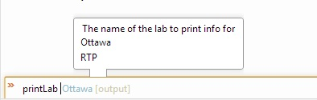
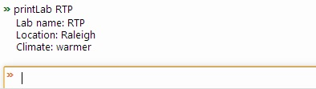

| Example | ||
|---|---|---|
|
|
|
|
| orion.shell.type | Updating this document | |
The following sample plug-in contributes a "lab" type and "printLab" command to the Shell:
<html>
<head>
<script src="/orion/plugin.js"></script>
<script src="/orion/Deferred.js"></script>
<script>
/* first, contribute a custom type that will be used by the contributed command */
var CompletionStatus = {
MATCH: 0,
PARTIAL: 1,
ERROR: 2
};
var labTypeProperties = {
name: "lab"
};
var labTypeImpl = {
parse: function(arg, typeSpec, context) {
/*
* Compute all potential prediction objects here, can be done asynchronously
* if needed (eg.- if need to wait on an XHR).
*/
var ottawaValue = {name: 'Ottawa', address: 'Kanata, actually', climate: 'colder'};
var rtpValue = {name: 'RTP', address: 'Raleigh', climate: 'warmer'};
var potentialPredictions = [
{
name: 'Ottawa', /* the string to be typed */
value: ottawaValue /* the corresponding object */
},
{
name: 'RTP', /* the string to be typed */
value: rtpValue /* the corresponding object */
}
];
var value; /* undefined until a valid value is fully typed */
var status; /* one of the CompletionStatus values above */
var predictions = []; /* an [] of {name: typedString, value: object} */
for (var i = 0; i < potentialPredictions.length; i++) {
if (potentialPredictions[i].name.indexOf(arg.text) === 0) {
predictions.push(potentialPredictions[i]);
if (potentialPredictions[i].name === arg.text) {
value = potentialPredictions[i].value;
}
}
}
status = CompletionStatus.ERROR;
if (predictions.length > 0) {
status = value ? CompletionStatus.MATCH : CompletionStatus.PARTIAL;
}
var result = {
value: value,
message: (status === CompletionStatus.ERROR ? ("'" + arg.text + "' is not valid") : undefined),
status: status,
predictions: predictions
};
/*
* If all of the above can be computed synchronously then just return result directly.
* If the above cannot be done synchronously (eg.- waiting on an XHR) then return
* a promise as demonstrated below and resolve it when the result becomes ready.
*/
var promise = new orion.Deferred();
setTimeout(
function() {
promise.resolve(result); /* result has become ready some time later */
}
);
return promise;
}
};
/* contribute a command that uses the custom type */
var printLabProperties = {
name: "printLab",
description: "Print a lab location",
parameters: [{
name: "lab",
type: {name: "lab", showClimateToo: true},
description: "The name of the lab to print info for"
}],
returnType: "string"
};
var printLabImpl = {
callback: function(args) {
var result = "Lab name: " + args.lab.name + "\nLocation: " + args.lab.address;
if (args.lab.climate) {
result += "\nClimate: " + args.lab.climate;
}
return result;
}
};
var provider = new orion.PluginProvider();
provider.registerServiceProvider("orion.shell.type", labTypeImpl, labTypeProperties);
provider.registerServiceProvider("orion.shell.command", printLabImpl, printLabProperties);
provider.connect();
</script>
</head>
</html>
When this plug-in is installed the user can use the "printLab" command in the Shell. The first image below shows a user in the process of entering a printLab command, and is shown a list of valid argument values.

In the following image the printLab command has executed and its result is shown in the output area.

|
|

|
|
| orion.shell.type | Updating this document |